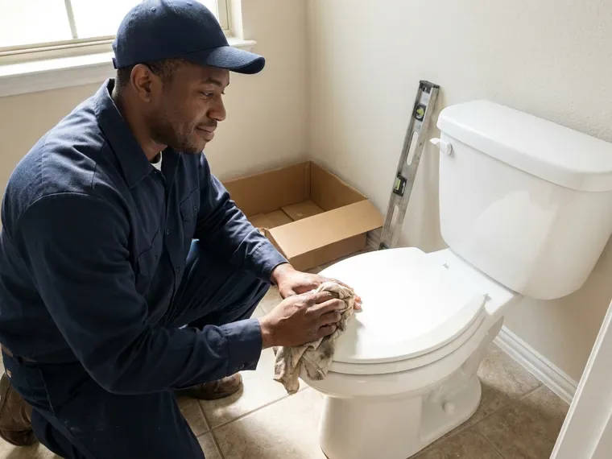
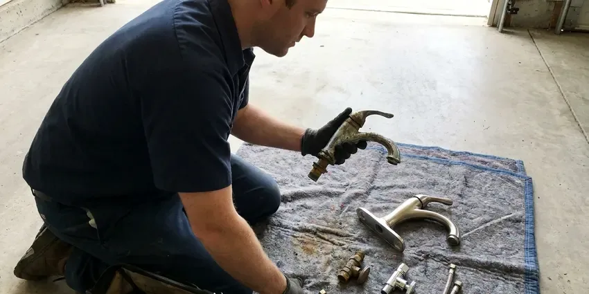

Basement Sump Pump Installation in Castro Valley, CA
From a new liner and pit to a cast iron pump with battery backup, we install basement sump systems in Castro Valley, CA that keep working when the storm hits.
- Upfront Pricing
- Licensed Plumbers
- Battery Backup Options
- Quick Sump Pump Installs

Expert Sump Pump Installation Services in Castro Valley, CA.
Call now and a licensed plumber will size, set and test your new basement sump pump, in many cases the same day.
Reliable Basement Sump Pump Installation for Castro Valley, CA Homes With Lower Levels
FBL Plumbing knows that basements can flood fast when a storm dumps heavy rain on soil that cannot absorb it quickly enough. We pair the right horsepower pump with a check valve, a vented lid and a discharge line that will not freeze or backflow. You get a dry basement and a system you never need to babysit.
Our expertise includes:
- Installation of primary and battery backup sump pump systems.
- Cast iron submersible and pedestal pump sizing and installation
- Sizing and selecting the right pump for your basement's needs.

Additional Plumbing Installation Services in Castro Valley, CA
We install water heaters, pumps, lines, and fixtures across Castro Valley, CA with precision workmanship that meets every local code.


Customers
Why Choose FBL Plumbing for Basement Sump Pump Installation in Castro Valley, CA?
Our experience with the various foundation types found in Castro Valley ensures a precise and effective sump pump installation tailored to your home's needs.
- Quality Equipment, We install only long-lasting, high-performance sump pumps from trusted manufacturers.
- Local Expertise, We know the drainage and soil conditions that affect Castro Valley basements.
- Flood Prevention, A correctly installed sump pump prevents costly water damage to your basement and its contents.
Citywide Coverage
FBL Plumbing proudly serves every neighborhood and community within Castro Valley and its surrounding areas for basement sump pump installation. We understand the drainage challenges different parts of Castro Valley can face.
Experienced Team
The FBL Plumbing team is made up of licensed and insured professionals focused on precision and customer satisfaction. We take pride in our workmanship, making sure every basement sump pump installation meets our strict standards.
Safety-First Approach
Our installation process includes careful checks for proper operation and compliance with all Northern California safety standards. You can count on FBL Plumbing to provide a safe and reliable basement sump pump system in Castro Valley.
Trusted Certified Castro Valley Plumbing Services Professionals
At FBL Plumbing, we take pride in providing certified plumbing services throughout Castro Valley, CA. Backed by leading industry credentials, our experienced plumbers combine technical skill with genuine customer care. Whether it is repair, installation, or maintenance, we follow strict safety and quality standards to deliver lasting results you can trust.
Call Us Now PHCC Plumbing Contractor Recognition
PHCC Plumbing Contractor Recognition Better Business Bureau (BBB) Accreditation
Better Business Bureau (BBB) Accreditation Angi Certified Pro
Angi Certified Pro ISO 9001 Quality Management Certification
ISO 9001 Quality Management CertificationDependable Basement Sump Pump Installation Services in Castro Valley, CA
Emergency Sump Pump Installation in Castro Valley, CA
If you are facing an urgent flooding threat or your existing sump pump has failed, FBL Plumbing offers emergency basement sump pump installation in Castro Valley, CA. We understand the urgency of protecting your home from water damage and will dispatch a skilled plumber quickly to assess the situation and install a new, reliable sump pump. Don't let a failing pump lead to disaster.

Battery Backup Sump Pump Installation in Castro Valley, CA
Power outages can happen, especially during severe weather, and they leave your primary sump pump useless. We offer and install battery backup sump pump systems that switch on automatically if the power goes out, providing continuous protection for your basement in Castro Valley, CA. Strong winter storms can bring days of heavy rain to Northern California, saturating ground and pushing water into basements and sewer lines. These systems include a deep cycle battery and a secondary pump, so your basement stays dry even when the electricity fails.
New Sump Pit Excavation in Castro Valley
If your basement has never had a pump, we start by locating the low point where water collects. We saw cut the slab, excavate a pit roughly 18 to 24 inches wide and 24 to 30 inches deep, and set a perforated or solid liner depending on whether we are collecting groundwater or surface seepage. Gravel goes around the liner to help water flow in while keeping fine soil out. We then patch the slab flush with new concrete so the floor remains clean and level.
Commercial and Multi-Unit Sump Installations in Castro Valley
Office buildings, parking structures and multi-unit properties with below-grade levels often need duplex sump systems with two pumps and an alternating control panel. The panel switches lead and lag pumps on each cycle so wear stays even, and a high water alarm notifies building staff. We coordinate electrical with your electrician and follow manufacturer specs for basin size and float settings. Property managers get a clear maintenance schedule to keep both pumps exercised.
Discharge Line and Check Valve Installation in Castro Valley
A great pump is useless if the water it moves runs right back toward the foundation. We route rigid PVC discharge pipe out of the basement and extend it at least 10 feet from the house or into a pop-up emitter or dry well. A spring or swing check valve keeps the column of water from dropping back into the pit after every cycle, which saves wear on the motor. Freezing is uncommon along the coast and on valley floors in Northern California, but frosty nights do happen and can crack unprotected outdoor pipes. Where lines can freeze, we add a freeze-resistant outlet so ice cannot block the line.
Wayne Sump Pump Installation in Castro Valley, CA
Wayne sump pumps offer a wide range of options, from basic utility pumps to advanced systems with built-in alarms and smart features. Our technicians are experienced in installing Wayne pumps, providing efficient water removal for your Castro Valley, CA basement. We help you choose the right Wayne model for your needs and complete a professional installation that gets the most from its performance and lifespan.
High-Capacity Sump Pump Solutions in Castro Valley, CA
For homes with significant groundwater issues or large basements, a standard sump pump may not be enough. FBL Plumbing installs high-capacity sump pump systems designed to move larger volumes of water quickly and efficiently. These systems often feature more powerful motors and larger discharge lines. We conduct a thorough assessment of your property to recommend and install a system that can handle even the heaviest rainfall.

Battery Backup Sump Pump Systems in Castro Valley
Power outages during heavy storms can leave a primary sump pump useless, leading to basement flooding. A battery backup sump pump provides vital protection when the power goes out. We install reliable backup systems that activate automatically, keeping water moving even without electricity. This is an essential safeguard for homes in Castro Valley that lose power during storms, offering peace of mind in severe weather. We integrate these systems cleanly with your existing plumbing.
Basement Sump Pump Installation Near Me in Castro Valley, CA
When you search for 'basement sump pump installation near me' in Castro Valley, you will find FBL Plumbing as your reliable local expert. We are familiar with the water drainage challenges and soil conditions around Castro Valley, which lets us provide tailored solutions. Earthquakes and hillside soil movement are real risks in Northern California, so flexible connections and seismic straps help protect plumbing from ground movement. Our local presence means faster response times for your basement protection needs.
FBL Plumbing is dedicated to serving homeowners in Castro Valley and the surrounding communities. We are the trusted choice for basement sump pump installation, offering prompt, professional service right in your neighborhood. Our commitment to quality means your home protected against flooding, providing peace of mind.
FBL Plumbing at a Glance
- Fully licensed plumbing team covering Castro Valley, CA
- 24/7 emergency service with same-day scheduling
- Clear written estimates, no hidden fees
- 4.8-star rated by 834+ Northern California customers
Castro Valley Map
Castro Valley Information
- Population
- 66,441
- Area codes
- 510/925/650
- Service area
- Castro Valley and communities within 40 miles
- Nearby
- San Leandro, Hayward, Union City, San Ramon
Earthquakes and hillside soil movement are real risks in Northern California, so flexible connections and seismic straps help protect plumbing from sudden movement. In Castro Valley, CA, a properly installed sump pump keeps that water from collecting against your foundation and seeping into the basement.
Expert Services
Trust our professionals for reliable FBL Plumbing solutions in Castro Valley, CA.
Our Specialized Plumbing Services in Castro Valley, CA
At FBL Plumbing, we provide a complete range of plumbing services across Castro Valley, CA. From leak detection to full system installations, our team ensures fast, precise, and affordable service for both residential and commercial properties. Explore our core services below:




Plumbing Replacement near Castro Valley

How Our Basement Sump Pump Installation Process Works in Castro Valley, CA
Our basement sump pump installation process is designed for efficiency and minimal disruption to your home. We handle every step professionally and to high standards.
Request a Quote
Call (669) 319-2034 or fill out our online form to schedule an initial consultation. We will discuss your needs and set up a convenient time for an on-site assessment.
On-Site Assessment
A licensed plumber will visit your Castro Valley home to evaluate your basement's layout, identify likely water entry points and determine the best location and type of sump pump for your situation.
Professional Installation
Our team will expertly install your chosen sump pump system, including excavating the sump pit, installing the basin, connecting the pump and routing the discharge line according to local Northern California codes. We ensure all electrical connections are safe and secure.
Frequently Asked Questions About Basement Sump Pump Installation in Castro Valley
Replacing a pump in an existing pit usually runs $500 to $1,200 including the pump and check valve. Installing a new pit through the slab usually falls between $1,500 and $3,500, and adding a battery backup adds about $600 to $1,500.
Swapping a pump in an existing pit usually takes two to three hours. A new pit with slab cutting and concrete patching usually takes most of a day.
It is a good idea to test your sump pump every 2 to 3 months, especially before and after the rainy season. Simply pour a bucket of water into the sump pit to make sure the pump activates, drains the water and shuts off properly. Regular testing helps catch issues early.
Copper became standard in many mid-century homes here, and decades later pinhole leaks and worn fittings are a common repair call. Homes built on slabs without basements seldom need one. Homes that do have basements or below-grade rooms can take on water quickly during heavy storms, especially where the soil sheds rain instead of absorbing it.
We install a wide range of well-built, reliable sump pump brands, including Zoeller, Wayne, Little Giant and Liberty Pumps. We can help you pick the best brand and model for your budget and water management needs in your Castro Valley home, considering horsepower and features.
We recommend having your sump pump inspected and maintained annually, ideally before the rainy season. Regular maintenance includes checking the float switch, cleaning debris out of the pit, testing the check valve and confirming the discharge line is clear. This helps prevent unexpected failures and lengthens the life of your pump.
A submersible sump pump sits entirely within the sump pit, making it quieter and less noticeable. A pedestal sump pump has its motor above the pit, making it easier to access for maintenance and often more affordable. Both types are effective for removing water from your basement.
Typically, standard home insurance policies do not cover a new sump pump installation or repairs unless the damage was caused by a sudden, accidental event like a burst pipe, rather than gradual wear and tear or groundwater seepage. Some policies offer separate water backup or sump pump failure endorsements for an extra premium. It is best to check with your insurance provider.
What People Are Saying About Our Plumbing Experts?

Patricia H.
We had a slab leak that two other companies could not find. FBL Plumbing located it in under an hour, explained our options, and the price matched the quote to the dollar.
Slab Leak Repair · Dublin, CASofia M.
Two new toilets installed in one visit, no mess left behind, and the tech even adjusted a faucet he noticed was dripping. Fair pricing and really friendly.
Toilet Installation · Castro Valley, CADaniel K.
A pipe burst at 11 pm and they actually answered. The plumber showed up within the hour, shut everything down, and had us back to normal the next morning. Could not ask for more.
Emergency Plumbing · Union City, CA
James P.
Our commercial plumbing system had a leak under the sink, and FBL Plumbing handled it professionally. The plumbers arrived quickly and restored everything without disruption to our customers.
Commercial Plumbing · Castro Valley, CALaura S.
I scheduled a water heater replacement, and the team made the process smooth and affordable. The new unit works perfectly, and they cleaned up after completing the job.
Water Heater Replacement · San Leandro, CARobert G.
The trenchless sewer replacement saved our front yard. They walked us through the camera inspection footage first so we knew exactly what we were paying for.
Sewer Line Replacement · San Ramon, CA